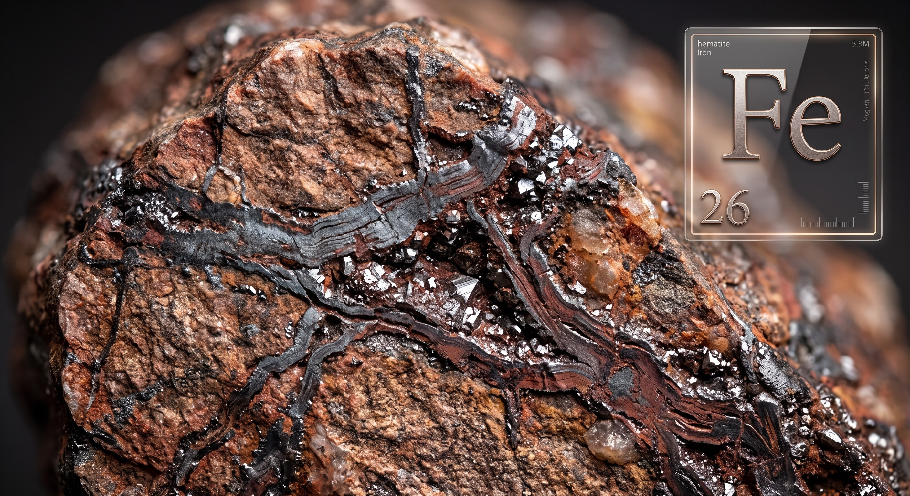
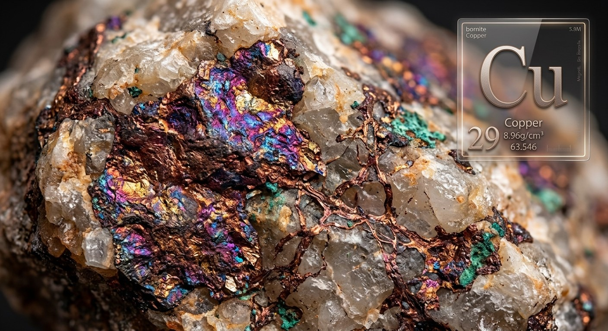
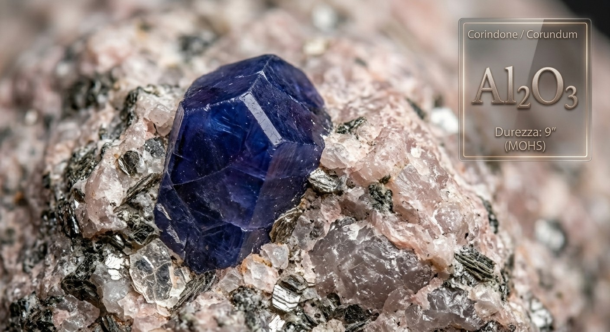
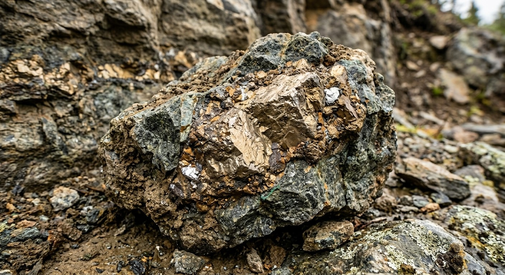
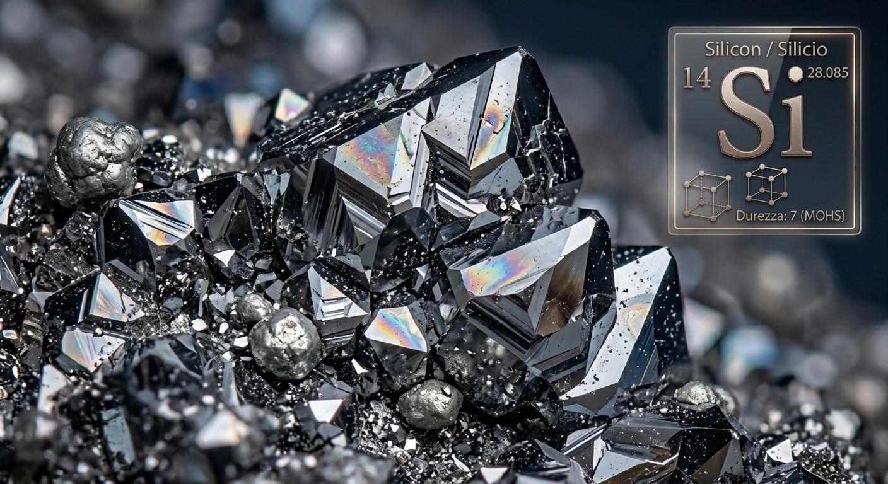

1°
Base de Fer (Fe)

2°
Base de Cuivre (Cu)

3°
Corindon (Al₂O₃)

4°
Base Nickel (Ni / LIGA)

5°
Silicium Pur (Si)
1° Base de Fer (Fe) : Aciers & Traitements Thermiques
Le fer allié au carbone forme l'ossature des composants soumis aux contraintes de friction et d'effort mécanique :
⚙️ Règle d'Atelier Fondamentale :
Dans la montre mécanique, TOUS les composants en acier du mouvement sont rigoureusement en acier trempé.
- Pièces réalisées en acier trempé : Axe de balancier, pignons, rochet, roue de couronne, vis, tige de remontoir.
- Durnico® (600 Hv) : Acier allié à haute résistance (Fe + C + Ni + Co). Matériau très résistant et dur, mais difficile à usiner. Utilisé pour les ressorts résistants, renvois et rochets d'armage.
📷 FEUILLET MANUSCRIT ORIGINAL (01-25) — Familles de Matières & Base de Fer (Acier, Trempe, Revenu, Durnico)
2° Alliages de Cuivre (Base de Cuivre)
Les alliages cuivreux sont privilégiés pour la confection des bâtis (platines, ponts) et des mobiles en raison de leur usinabilité et de leurs qualités amagnétiques :
- Laiton (180 Hv) — Alliage Cuivre + Zinc (Cu + Zn) :
- Avantages : Facile à usiner, se coupe aisément au taillage, amagnétique, bon coefficient de glissement naturel.
- Inconvénient : S'oxyde à l'air libre ! Doit être impérativement protégé par un traitement de surface galvanique : dorage, rhodiage, nickelage (dépôt classique de 1 µm ; supérieur à 5 µm = Plaquage).
- Pièces : Planches de roues, ponts, platines, tambour et couvercle de barillet.
- Maillechort (220 Hv) — Alliage Cuivre + Nickel + Zinc (Cu + Ni + Zn) :
- Propriétés : Plus dur et plus résistant mécaniquement que le laiton, pratiquement inoxydable, ne s'altère pas avec le temps.
- Historique & Usage : Entre 1840 et 1910, il était utilisé brut sans aucun traitement galvanique. Aujourd'hui, il est réservé aux calibres traditionnels haut de gamme avec traitement décoratif de surface. Son coût est supérieur à celui du laiton.
- Pièces : Platines, ponts de haute horlogerie, serge de balancier.
- Bronze — Alliage Cuivre + Étain (Cu + Sn) :
- Propriétés : Matériau dur et cassant, doté d'un coefficient de glissement exceptionnel avec l'acier trempé.
- Sonorité : Excellente résonance acoustique, traditionnellement utilisé pour les timbres et cloches des montres à sonnerie.
- Pièces : Pièces mécaniques anti-usure, coussinets, machines principales.
- Glucydur® (380 Hv) — Alliage Cuivre + Béryllium (Cu + Be) :
- Propriétés : Alliage de bronze au béryllium à dureté et élasticité très élevées, amagnétique, mais très difficile à usiner.
- Pièces : Balanciers de précision chronométrique, ressorts spéciaux, doigts d'enclenchement (non utilisé pour le spiral).
📷 FEUILLET MANUSCRIT ORIGINAL (01-26) — Alliages de Cuivre (Laiton, Maillechort, Bronze, Glucydur)
3° Corindon, Base Nickel (LIGA) & Silicium Pur
3. Corindon Synthétique (Al₂O₃ - Oxyde d'Aluminium)
- Dureté Extrême : 2200 à 2400 Hv (situé juste en dessous du diamant sur l'échelle de Mohs).
- Propriétés : Coefficient de friction quasi nul en contact avec l'acier poli trempé. La couleur est obtenue par adjonction d'oxydes métalliques lors de la fusion thermique :
- Rouge : Rubis (palettes d'ancre, cheville de plateau, pierres de pivotement).
- Bleu / Transparent : Saphir (glaces protectrices de boîte et fonds transparents).
- Repères Historiques :
- 1704 : Invention du procédé de perçage des rubis naturels pour les paliers horlogers.
- 1904 : Invention du procédé de fusion synthétique du rubis (procédé Verneuil).
4. Base Nickel & Technologie Mimotec® (580 Hv)
- Composition : Nickel pur ou alliage Nickel-Phosphore (Ni + P).
- Procédé de Fabrication : Croissance galvanique de précision par micro-usinage (technologie LIGA / électroformage).
- Propriétés : Extrêmement dur, léger, parfaitement amagnétique. Permet de concevoir des composants complexes, massifs ou très ajourés.
- Pièces : Cames de chronographe, ressorts complexes, roues d'affichage rétrograde.
4b. Focus Technique : La Technologie Mimotec (Procédé UV-LIGA)
Pionnière dans l'horlogerie, l'entreprise suisse Mimotec utilise le procédé UV-LIGA (Lithographie, Galvanoformung, Abformung - Lithographie, Électroformage, Moulage). C'est une méthode de micro-fabrication combinant photographie et chimie galvanique, remplaçant totalement le fraisage mécanique traditionnel.
- 1. Photolithographie (Le Moule) : Une résine photosensible est appliquée sur une plaque conductrice. Exposée aux rayons UV à travers un masque, la résine dessine le contour exact de la pièce. La partie non polymérisée est dissoute, créant un moule vide ultra-précis.
- 2. Électroformage (La Croissance) : La plaque est plongée dans un bain galvanique. Les ions de Nickel (ou Nickel-Phosphore) se déposent atome par atome, "poussant" de bas en haut pour remplir le moule en résine.
- 3. Libération de la Pièce : La résine restante est dissoute chimiquement, libérant le composant métallique solide et parfaitement formé.
Avantages pour la Haute Horlogerie :
Précision absolue (tolérances au micron), flancs lisses d'origine (état de surface miroir sans polissage manuel), absence totale de stress mécanique sur la matière, et possibilité de créer des géométries complexes irréalisables en usinage CNC (angles vifs internes parfaits).
5. Silicium Pur (Si)
- Densité et Légèreté : Densité de 2.3 kg/dm³ (comparatif : Aluminium 2.7, Titane 4.5, Acier 7.9, Or 19.3).
- Usinage : Gravure par faisceau plasma (technologie DRIE).
- Propriétés : Ultra-léger, extrêmement dur, très cassant, 100% amagnétique. Il supporte remarquablement la fatigue élastique cyclique mais ne tolère aucune déformation plastique.
- Pièces : Spiraux de balancier, roues d'échappement, ancres, balanciers innovants.
📷 FEUILLET MANUSCRIT ORIGINAL (01-27) — Corindon, Rubis, Mimotec® LIGA & Silicium Pur
Tableau Comparatif d'Atelier : Duretés & Densités
| Matériau |
Formule / Alliage |
Dureté Vickers |
Densité (kg/dm³) |
Composants Horlogers Typiques |
| Laiton |
Cu + Zn |
180 Hv |
8.4 – 8.7 |
Platines, ponts, roues, barillets |
| Maillechort |
Cu + Ni + Zn |
220 Hv |
8.7 |
Bâtis haut de gamme, ponts traditionnels |
| Glucydur® |
Cu + Be |
380 Hv |
8.25 |
Balanciers de haute précision, doigts, ressorts |
| Mimotec® (LIGA) |
Ni + P |
580 Hv |
2.3 – 8.9 |
Cames de précision, rouages rétrogrades |
| Durnico® |
Fe + C + Ni + Co |
600 Hv |
8.0 |
Ressorts résistants, rochets, renvois |
| Acier Trempé |
Fe + C (1 à 2% C) |
700 – 800 Hv |
7.85 |
Axes de balancier, pignons, vis, tiges |
| Silicium Pur |
Si pur |
1100 Hv |
2.3 |
Spiraux amagnétiques, échappements modernes |
| Corindon (Rubis) |
Al₂O₃ |
2200 – 2400 Hv |
4.0 |
Pierres de coussinet, palettes d'ancre, ellipse |